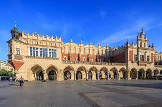
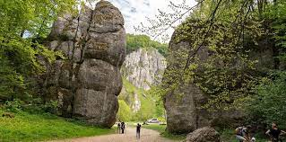

Ma³opolska jest to bardzo charakterystyczna, o znaczeniu historycznym kraina Polski. Jest ona ulokowana w po³udniowo-wschodniej czêœci kraju, a dok³adniej w górnym, oraz w pewnej czêœciowo œrodkowym dorzeczu rzeki Wis³y oraz Warty. Stolic¹ Ma³opolski jest wielkie miasto Kraków.
Zamek „Dunajec” Niedzica. Jest to œredniowieczna warownia po³o¿ona nad brzegiem Jeziora Czorsztyñskiego we wsi Niedzica-Zamek. Zamek ten jest jednym z najbardziej charakterystycznych elementów krajobrazu Pienin i nale¿y do najpiêkniejszych i najbardziej znanych zamków w Polsce. Dziêki swojemu po³o¿eniu i otaczaj¹cej go malowniczej okolicy z jego murów roztaczaj¹ siê fantastyczne widoki na okoliczne góry i miejscowoœci.
Sukiennice to zabytkowy budynek po³o¿ony w Krakowie, w samym centrum Rynku G³ównego. W przesz³oœci znajdowa³y siê tu sk³ady materia³ów - najczêœciej z wyrobami z tkaniny. Pierwowzór Sukiennic w formie kramów istnia³ ju¿ w XIII wieku. Sukiennice by³y jedn¹ z najwa¿niejszych instytucji miasta – tu bowiem koncentrowa³ siê handel. Pierwsze Sukiennice, które powsta³y w XIII wieku, gdy Krakowowi nadano prawa miejskie, by³y dwoma rzêdami kamiennych kramów, tworz¹cymi uliczkê na œrodku Rynku. Oba jej koñce zamykano na noc krat¹, by trzymaæ z³odziei z daleka. Murowane, zadaszone Sukiennice powsta³y w XIV wieku – ich œlady w postaci ostro³ukowych arkad po bokach s¹ widoczne do dziœ. Handel w Sukiennicach by³ istotnym Ÿród³em dochodów miasta – zgodnie z królewskim przywilejem przyjezdni kupcy sukienni mogli sprzedawaæ swój towar tylko w tym miejscu. Œredniowieczna hala targowa stoj¹ca poœrodku krakowskiego Rynku. Pierwotnie by³a tu uliczka z kramami zamykana na noc, aby zapewniæ bezpieczeñstwo kupcom, którzy ustawili na ulicy wozy z towarem. Na handel suknem zezwala³ miastu przywilej lokacyjny z 1257. W XIII w. uliczkê nakryto drewnianym dachem, dziêki czemu powsta³ pierwszy budynek Sukiennic. Takie kramy czy sk³ady z suknem wznoszono w miastach po³o¿onych na szlakach handlowych od œredniowiecza do koñca XVII w., zwykle jako okaza³e budynki umieszczane na œrodku rynku w pobli¿u ratusza czy wagi miejskiej.
W Myœlenicach, na prawym brzegu Raby, na wystêpie skalnym zbocza Ukleiny na wysokoœci oko³o 380 m n.p.m. znajduj¹ siê ruiny tajemniczego Zamczyska. S¹ to pozosta³oœci warownej budowli obronnej pochodz¹cej z XIII lub pocz¹tku XIV wieku. Zamek mia³ byæ czêœci¹ sytemu warowni strzeg¹cych drogi na Wêgry. Warowniê stanowi³a wolno stoj¹ca okr¹g³a wie¿a, tak zwany sto³p, zbudowany z miejscowego kamienia. U podstawy mia³ œrednicê 10,2 metrów, a jego mury mia³y gruboœæ ponad 4 metrów. Towarzyszy³ mu drewniany dwór z kamiennymi fundamentami oraz byæ mo¿e drewniane budynki gospodarcze. Zamek otoczony by³ wa³em ziemnym oraz drewnian¹ palisad¹.
 Po³o¿ony jest w województwie ma³opolskim. Obejmuje po³udniowy fragment Wy¿yny Krakowsko-Czêstochowskiej oraz czêœæ œrodkow¹ Doliny Pr¹dnika i czêœæ Doliny S¹spowskiej. Park utworzony zosta³ w 1956 r. na powierzchni prawie 1571 ha, a obecnie zajmuje powierzchniê prawie 2146 ha (otulina – 6777 ha) i jest najmniejszym polskim parkiem narodowym. Obszary leœne stanowi¹ wiêksz¹ jego czêœæ - 1528 ha.Krajobraz parku tworz¹ liczne wytwory skalne z wapieni górnojurajskich, o bia³ej i jasnoszarej barwie. W Ojcowskim Parku Narodowym rozró¿nia siê dwie formy rzeŸby terenu: dolinne (jary, dolinki krasowe, w¹wozy) oraz wierzchowinowe (liczne ska³ki z wapieni skalistych, tzw. ostañce, które zdobi¹ jurajsk¹ wierzchowinê). Nieod³¹cznym elementem wapiennej rzeŸby Wy¿yny Krakowsko-Czêstochowskiej s¹ jaskinie. Na ca³ej Wy¿ynie odkryto dotychczas oko³o 1000 mniejszych i wiêkszych jaskiñ.Turystyka w parku odbywa siê wy³¹cznie po wyznaczonych szlakach. Prowadz¹ one przez najbardziej atrakcyjne obszary Parku, gdzie zobaczyæ mo¿na twory skalne takie jak: Brama Krakowska, Maczuga Herkulesa, Ig³a Deotymy, najd³u¿sze tutaj jaskinie – £okietka (320 m) i Ciemn¹ (230 m).
Zalipie to niewielka miejscowoœæ po³o¿ona na Powiœlu D¹browskim, nieopodal Tarnowa, w województwie ma³opolskim. Jest tutaj kolorowo, wiosennie i pogodnie. A to wszystko dziêki malowaniu domów w kwieciste wzory i kolory. Zalipie zbiera skrajne opinie. Od zachwytów pe³nych ochów i achów, po krytyczne uwagi. Nasz komentarz odnajdziecie na koñcu. Jednak jeden fakt jest niezmienny, Zalipie jest najbardziej kolorow¹ wsi¹ w Polsce.